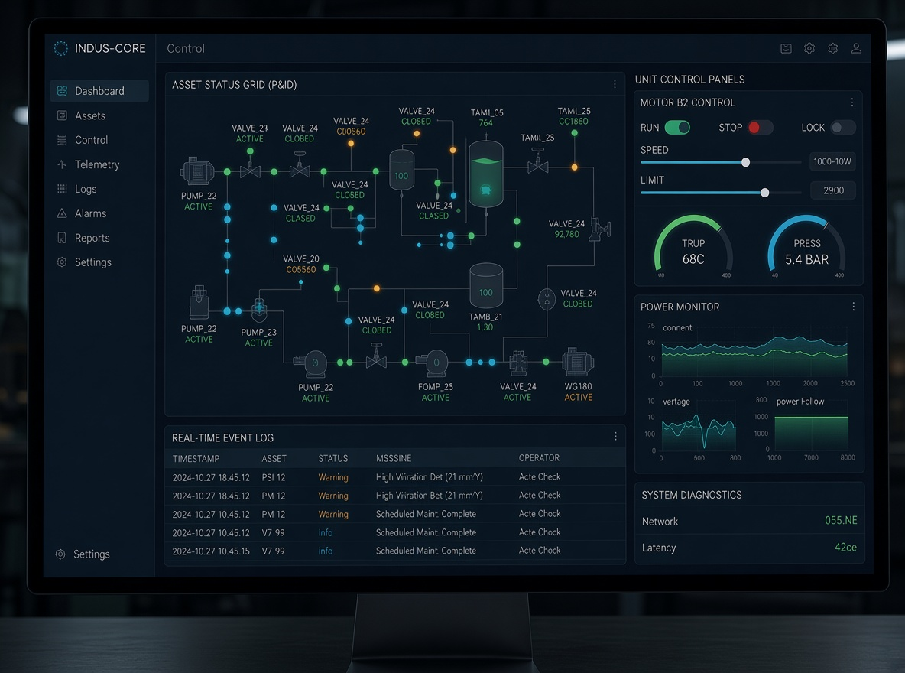
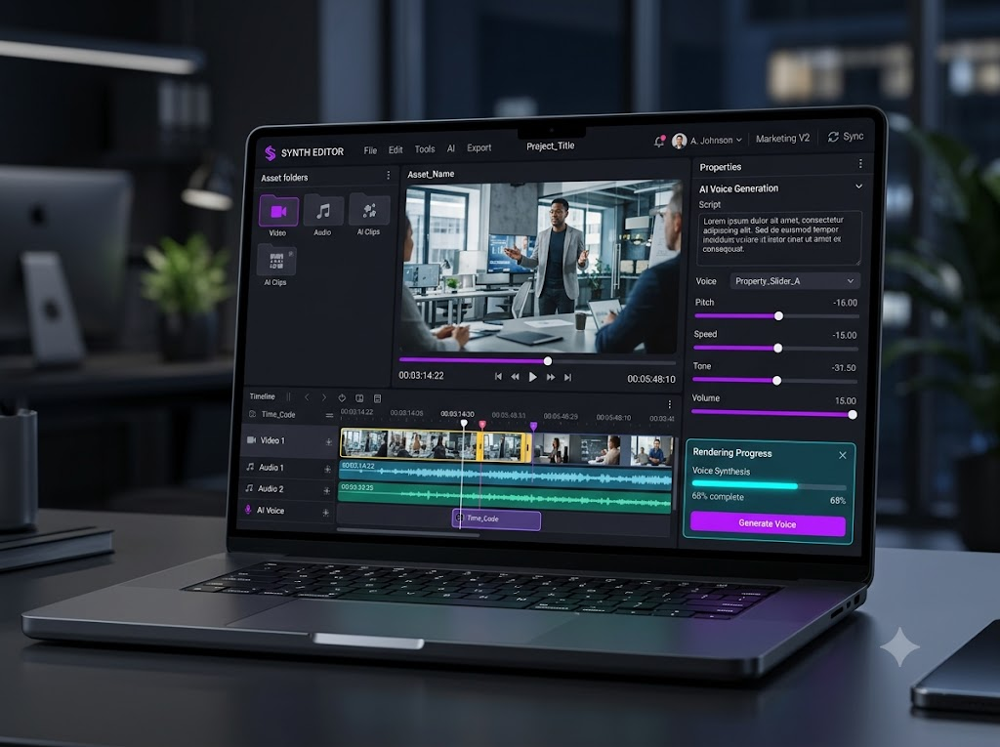
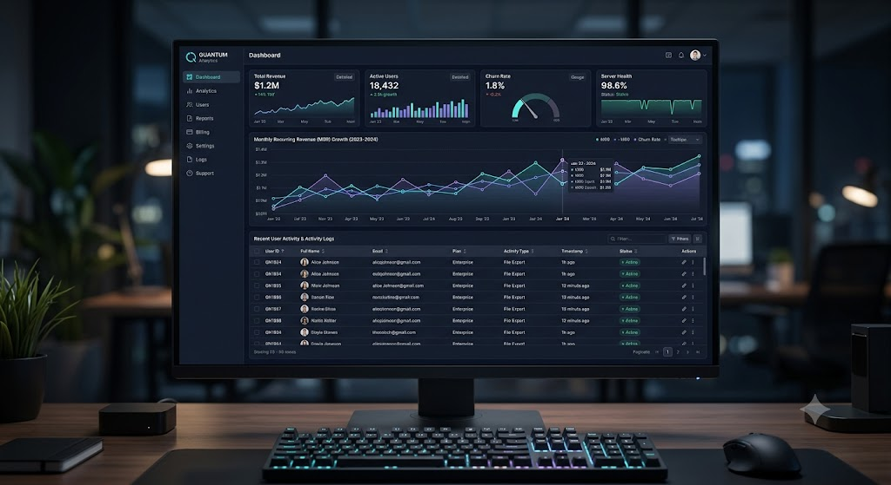

사람이 반복하던 일을
소프트웨어가 대신합니다
콘텐츠 제작 자동화부터 계측 장비 연동,
증권사 API 자동매매, 출하 검수까지.
현장의 장비·데이터·AI를 하나의 시스템으로 연결해
실제로 매일 쓰이는 자동화를 만듭니다.
국내외 기업의 신규 개발 · 유지보수 전담 파트너
- 20년+
- 개발·현장 경력
- 직접 수행
- 베테랑 엔지니어가 설계부터 적용까지
- 현장 중심
- 제조·장비 현장 경험 기반 개발



비용은 낮추고 생산성은 높이는 4가지 핵심 기술
각 기술은 실제 현장에 납품해 운영 중인 시스템에서 검증했습니다.
필요한 기술만 골라 조합하거나, 기존 설비·프로그램에 붙여서 도입할 수 있습니다.
반복 업무 자동화
영상 제작 자동화
기획서·대본 한 장으로 이미지 생성, 음성 녹음, 자막, 편집 프로젝트까지 이어지는 반복 업무를 한 번에 처리합니다.
자세히 보기이기종 장비 연동
중앙 모니터링
RS-232, Modbus, SCPI, PLC 등 유·무선으로 연결된 서로 다른 장비를 하나의 프로그램으로 제어하고 모든 측정값을 자동 기록합니다.
자세히 보기금융 데이터
자동매매 시스템
증권사 API로 국내·미국 시세를 실시간 수신하고, 정해진 전략과 리스크 규칙에 따라 주문을 자동 실행합니다.
자세히 보기출하 검수 · 비전 검사
MES 연동
바코드·전자저울·카메라로 오출고와 누락을 출하 전에 막고, 생산 수량과 진행 상황을 MES로 실시간 전송합니다.
자세히 보기현장에서 검증된 시스템 구축 레퍼런스
필요한 기능부터 빠르게 만들어 현장에서 바로 쓰는 시스템입니다.
고객사 요청에 따라 회사명은 업종으로 표기했습니다.
핵심 기술 · 반복 업무 · 영상 제작 자동화
교육 콘텐츠 채널 운영사 — 영상 제작 자동화(오토튜브)
대본 한 장으로 AI 이미지, AI 음성, 자막, CapCut 편집 프로젝트까지 자동으로 만듭니다.
핵심 기술 · 이기종 장비 연동 · 중앙 모니터링
음향기기 제조사 — 계측 장비 연동 검사 · 실시간 모니터링
계측 장비 3대를 하나의 프로그램으로 묶고, 검사 결과 엑셀 자동 기록, 실시간 차트, 텔레그램 원격 모니터링을 구현했습니다.
사례 자세히 보기핵심 기술 · 금융 데이터 · 자동매매
투자법인 — 키움증권 국내·미국 주식 자동매매
의뢰자의 매매 알고리즘으로 실시간 감시와 자동 매수·매도를 하고, 관련 종목 뉴스와 체결 내역을 텔레그램으로 알립니다.
핵심 기술 · 출하 검수 · 비전 검사 · MES 연동
제조사 출하 라인 — 바코드·중량·비전 출하 검수 · MES 연동
바코드 주문 대조, 전자저울 중량 체크, 카메라 유무 검사와 사진 이력으로 오출고를 막고, 생산 수량을 MES로 실시간 전송합니다.
사례 자세히 보기도입은 작게 시작해 검증 후 확장합니다
처음부터 전체 시스템을 만들지 않습니다.
가장 효과가 큰 기능부터 먼저 만들어 확인하고,
결과를 보며 단계적으로 확장합니다.
현장 진단
상담 또는 현장 방문
업무 흐름 확인
자동화 범위 정리설계 · 프로토타입
핵심 기능 우선 구현
시연 · 고객 의견 반영개발 · 현장 적용
현장 설치 · 시운전
사용자 교육안정화 · 유지보수
안정화 지원 · 기능 개선
유지보수 계약 체결 논의
현장을 아는 엔지니어가 직접 만듭니다
영업 담당자와 개발자가 따로 움직이지 않습니다.
첫 미팅부터 납품, 유지보수까지 같은 엔지니어가 책임집니다.
제조 현장 경험
한·중 제품 개발, 품질 관리, 출하 검사 라인 자동화 프로젝트를 다수 수행했습니다. 현장 작업자가 실제로 쓸 수 있는 화면과 흐름을 압니다.
자체 제품을 운영하는 개발사
유튜브 영상 제작 자동화 프로그램 ‘오토튜브 Pro’를 직접 개발·판매합니다. 설치·업데이트·라이선스까지 직접 운영한 경험을 고객 프로젝트에 그대로 적용합니다.
데스크톱부터 웹, AI까지 한 번에
C#/.NET 데스크톱 프로그램, 장비 통신, 웹 대시보드, 로컬 GPU AI 모델까지 한 팀에서 개발하므로 시스템 사이의 연결 비용과 책임 공백이 없습니다.
작은 개발도 환영합니다
큰 시스템이 아니어도 괜찮습니다.
규모가 작아도 부담 없이 문의하세요. 이런 작업도 빠르게 개발해 드립니다.
- PC ↔ 장비 연동간단한 모니터링·제어 프로그램 (RS-232/485, USB, LAN)
- 마이컴(MCU) 보드 연동사용 중인 보드와 PC 통신, 측정 데이터 기록 프로그램
- 엑셀 자동 기록 · 반복 작업 자동화측정값 자동 저장, 수작업 정리 업무 자동화
- 알림 봇 · 스마트폰 대시보드텔레그램·카카오 알림, 스마트폰으로 보는 간단한 웹 화면
- 무선 원격 모니터링Wi-Fi·블루투스·LTE 모뎀으로 떨어진 장비 상태 확인·제어
- 전용 제어 보드 개발 (회로 · 펌웨어 · 프로그램)센서·릴레이·모터 제어 회로부터 펌웨어, PC·스마트폰 프로그램까지 한 번에 (PCB는 필요 시 전문 협력사와 진행)
자동화하고 싶은 업무를
알려주세요
현재 하고 계신 작업을 알려주시면
대표 엔지니어가 직접 검토해
자동화 가능 범위를 회신드립니다.
- 대표 엔지니어가 직접 검토 후 회신
- 상담 또는 현장 방문으로 요구사항 확인
- 범위 확정 후 견적 안내
- 요청 시 NDA(비밀유지계약) 체결 후 상담
메일로 직접 문의: contact@aibaselab.com